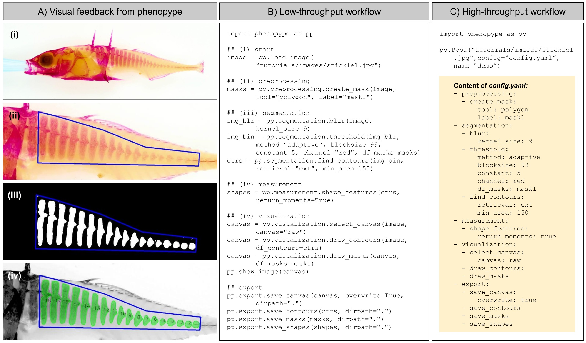
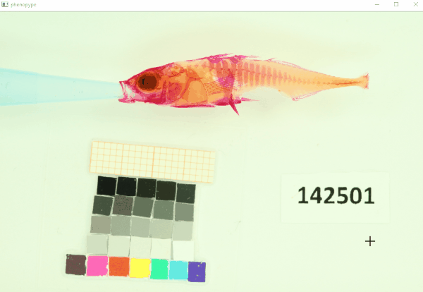

Tutorial 3: The phenopype workflows¶
Analysis of scientific images can be an iterative process that may require users to go back and forth, trying different processing steps and check how to improve results. Later, when the best functions and appropriate settings are found and efficient data collection has priority, image analysis should be efficient and with minimal user input to increase throughput and reproducibility. In phenopype, users can choose between two different workflows that are useful for different stages in the process of scientific image analysis:
Workflow |
Use case |
Operation principle |
Code explicitness |
Data reproducibility |
|---|---|---|---|---|
Low throughput |
“prototyping” - self education and evaluation on single images and small datasets |
image analysis functions are written and stored in Python |
high |
low |
High throughput |
“production” - default workflow for larger image datasets |
images analysis functions are written and stored in YAML format |
low |
high |
In the low throughput workflow, users write a function stack in directly in Python code. This is recommended for users who wish to familiarize themselves with the basic principles of computer vision or when working with only a handful of images. In contrast, the high throughput workflow is for production stage, when image analysis should be efficient and data collection reproducible for other users and scientists. In this tutorial you will learn about the differences between the two workflows.
Task: delineate armour plates¶
To demonstrate the two workflows we will attempt to quantify lateral armor plating in threespine stickleback (Gasterosteus aculeatus). First we need to draw a mask around posterior region that contains the plates. For that step you should select the boundaries around the area of interest, perform a thresholding operation inside the mask, and retrieve the contours inside. The procedure to extract bone-plate area is the same in all workflows, but workflows differ in the amount of explicit Python code, and in reproducibility.

Fig. 1: Workflow demonstration using a stained stickleback (Gasterosteus aculeatus) stained with alizarin red. Traits to be extracted area and shape of bone-plates, and, within the detected plates, pixel intensities that denote bone-density. Shown are visual feedback (A) from low-throughput (B) and high-throughput workflow (C), which use the same computer functions, but differ in the way these functions are called by the user: while in the low-throughput workflow all functions have to be explicitly coded in Python, the high-throughput routine parses the functions from human readable YAML files to facilitate rapid user interaction and increase reproducibility (Figure from Lürig 2021 [Fig. 2]).
Preparation¶
To run this tutorials, download the quickstart materials, and change the working-directory to the unzipped folder:
[1]:
import os
os.chdir(r"C:\Users\mluerig\Downloads\phenopype-quickstart-main")
Low throughput workflow¶
In the low throughput workflow, the output of every function needs to be explicitly passed on to the next step. First we need to use load_image, which imports the file as a three-channel numpy array (ndarray).
[2]:
import phenopype as pp
filepath = r"stickle1.jpg"
## load image as array, supply image_data (DataFrame containing meta data)
image = pp.load_image(filepath)
Next, run create_mask as in the tutorial before:

Fig. 2 Draw a mask around the armour plates. Finish with Enter.
[3]:
## draw mask
mask = pp.preprocessing.create_mask(image, tool="polygon", window_max_dim=1200)
After drawing a mask around the bone plates, we pass the mask on to the threshold function. Thresholding will convert a three dimensional array into a one dimensional binary array of the same width and hight (white denoting foreground, black denoting background).
[4]:
## thresholding converts multichannel to binary image
image_bin = pp.segmentation.threshold(
image, method="adaptive", blocksize=199, constant=5, annotations=mask
)
- multichannel image supplied, converting to grayscale
- decompose image: using gray channel
- including pixels from 1 drawn masks
This is what the thresholded image looks like:
[5]:
pp.show_image(image_bin)
Now we can use detect_contours to find boundary contours of the white area - the “foreground”, which is what we want.
[6]:
contours = pp.segmentation.detect_contour(image_bin, retrieval="ext", min_area=150)
- found 10 contours that match criteria
Next we can visualize the contours found by detect_contour. Note that we first have to draw them explicitly on a “canvas”, i.e. a background for visualization. We could draw them on the original image, but then it would be unusable for further work. So we use the function select_canvas from phenopype’s visualization module, which creates a copy of a specific image. The function can also take a specific image channel as canvas, for instance, the “red” channel on which the
threshwolding was performed.
[7]:
## create a canvas
canvas = pp.visualization.select_canvas(image)
# canvas = pp.visualization.select_canvas(image, canvas="red")
## draw detected contours onto canvas
image_drawn = pp.visualization.draw_contour(canvas, contours)
## show convas
pp.show_image(image_drawn)
- raw image
High throughput worflow¶
This is the default workflow to analyse medium and large image datasets in phenopype. Here, instead of writing down our analysis as a sequence of Python code, as we did in the low throughput workflow, we supply the same functions through a configuration file in human readable YAML format. This file can then be loaded by phenopype’s Pype class, which initiates the analysis by triggering three actions:
open the YAML configuration file in the default OS text editor
parse the contained functions and execute them in the sequence
open a HighGUI window showing the processed image, updates with every step
After an iteration of all steps, users can evaluate the results and decide to modify the opened configuration file (e.g. either change function parameters or add new functions), and run Pype again (by saving the changes), or to terminate the Pype-run and save all results to the root folder of the image (using Ctrl+Enter).

Fig 3 The Pype class in a for loop will trigger a series of events for each image directory provided by the loop generator: i) open the contained yaml configuration with the default OS text editor, ii) parse and execute the contained functions from top to bottom, iii) open a GUI window and show the processed image. Once the Pype class has finished executing all functions from the configuration file, users can decide to either modify the opened configuration file (e.g. either change function parameters or add new functions), which will trigger to run the Pype class again, or to close the GUI window, which will terminate the Pype class instance and save all results to the folder (Figure from Lürig 2021 [Fig. 3C]).
IMPORTANT - read before continuing:
In addition to regular window control functions documented in Tutorial 2:
Editing and saving the opened configuration file in the text editor will trigger another iteration, i.e. close the image window and run the config file again.
Closing the image window manually (with the X button in the upper right), also runs triggers another run.
Escwill close all windows and interrupt the pype routine (triggerssys.exit(), which will also end a Python session if run from the command line), as well as any loops.Each step that requires user interaction (e.g.
create_maskorlandmarks) needs to be confirmed withEnteruntil the next function in the sequence is executed.At the end of the analysis, when the final steps (visualization and export functions) have run, use
Ctrl+Enterto finish and close the window.
[9]:
import phenopype as pp
## create config-file (will be saved as "stickle1_pype_config_quickstart.yaml") - needs to be "loaded" to be converted
## from a write protected "template" file to a "pype_config" file.
pp.load_template(template_path="quickstart-template.yaml", tag="quickstart", image_path="stickle1.jpg", overwrite=True)
## run Pype class using the loaded config file - note that your previously drawn masks is loaded
pp.Pype(image_path="stickle1.jpg", tag="quickstart", config_path="stickle1_pype_config_quickstart.yaml")
## to redo the annotation procedure, you need to set "edit: True" or "edit: overwrite" in the "create_mask"
## "ANNOTATION" sequence OR select a new tag under which the results are saved/loaded:
pp.Pype(image_path="stickle1.jpg", tag="quickstart-v1", config_path="stickle1_pype_config_quickstart.yaml")
- template saved under stickle1_pype_config_quickstart.yaml
AUTOLOAD
- nothing to autoload
Stage: add annotation control args
Stage: add annotation control args
Stage: add annotation control args
Updating pype config: applying staged changes
------------+++ new pype iteration 2022-05-06 14:50:53 +++--------------
PREPROCESSING
create_mask
blur
SEGMENTATION
threshold
- multichannel image supplied, converting to grayscale
- decompose image: using gray channel
- including pixels from 1 drawn masks
detect_contour
- found 18 contours that match criteria
MEASUREMENT
compute_shape_features
VISUALIZATION
select_canvas
- raw image
draw_contour
draw_mask
EXPORT
save_canvas
- image saved under C:\Users\mluerig\Downloads\phenopype-quickstart-main\stickle1_canvas_quickstart.jpg.
save_annotation
- creating new annotation file
- no annotation_type selected - exporting all annotations
- writing annotations of type "mask" with id "a" to "stickle1_annotations_quickstart.json"
- writing annotations of type "contour" with id "a" to "stickle1_annotations_quickstart.json"
- writing annotations of type "shape_features" with id "a" to "stickle1_annotations_quickstart.json"
------------+++ finished pype iteration +++--------------
-------(End with Ctrl+Enter or re-run with Enter)--------
AUTOSHOW
TERMINATE
AUTOSAVE
- nothing to autosave
AUTOLOAD
- nothing to autoload
------------+++ new pype iteration 2022-05-06 14:51:01 +++--------------
PREPROCESSING
create_mask
blur
SEGMENTATION
threshold
- multichannel image supplied, converting to grayscale
- decompose image: using gray channel
- including pixels from 1 drawn masks
detect_contour
- found 18 contours that match criteria
MEASUREMENT
compute_shape_features
VISUALIZATION
select_canvas
- raw image
draw_contour
draw_mask
EXPORT
save_canvas
- image saved under C:\Users\mluerig\Downloads\phenopype-quickstart-main\stickle1_canvas_quickstart-v1.jpg.
save_annotation
- creating new annotation file
- no annotation_type selected - exporting all annotations
- writing annotations of type "mask" with id "a" to "stickle1_annotations_quickstart-v1.json"
- writing annotations of type "contour" with id "a" to "stickle1_annotations_quickstart-v1.json"
- writing annotations of type "shape_features" with id "a" to "stickle1_annotations_quickstart-v1.json"
------------+++ finished pype iteration +++--------------
-------(End with Ctrl+Enter or re-run with Enter)--------
AUTOSHOW
TERMINATE
AUTOSAVE
- nothing to autosave
[9]:
<phenopype.main.Pype at 0x160dd7d2288>
Now all results and intermediate data results are saved in the folder of the image. Of course you can modify the configuration files to change the outcome. For instance, try to change the blocksize argument in threshold to 49, or 499, and see what happens. If you do so while the window is open, phenopype will update the image window and show the updated results.
Learn about loading configuration-templates and YAML syntax in Tutorial 4.
[ ]: